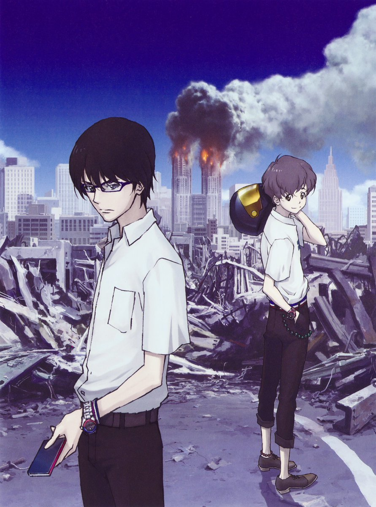
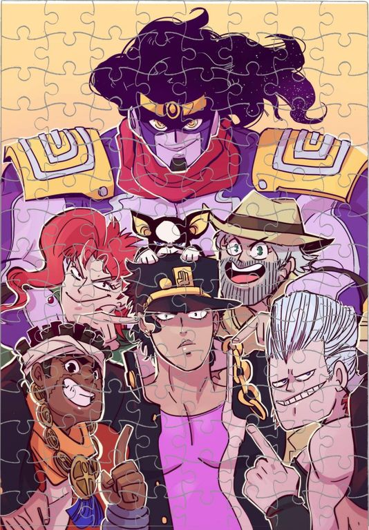
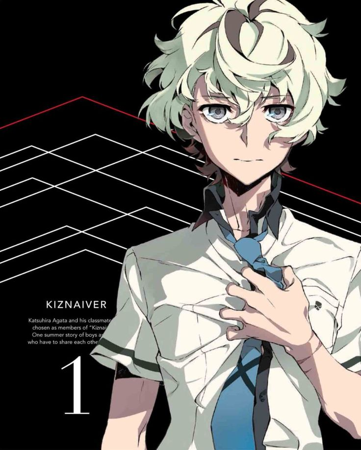
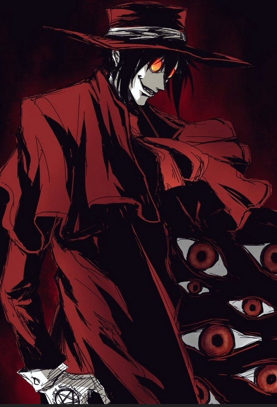

Количество серий: 12.
Часов просмотра: 5 часов.
«Эхо террора»
«Эхо террора» — отличный тайтл, затрагивающий важные социальные проблемы. Терроризм — это поистине ужасное явление, уничтожающее не только инфраструктуру, но и жизни реальных людей. Его нельзя оправдывать ни в коем случае, однако у автора «Эхо террора» немного свой взгляд на эту ситуацию. Что же может толкать людей на подобные ужасы? Как общество начнет реагировать на постоянные разрушения и смерти? Аниме «Эхо террора» ярко это показывает. Сериал небольшой, но даже за свой хронометраж успевает раскрыть персонажей и затронуть социально важные проблемы.
Оценка: 9 подрывов из 10

Количество серий: 156.
Часов просмотра: 52 часа.
«Джо Джо»
ДжоДжо – интересная подпивасная штука, где ты вначале кайфуешь, потом не понимаешь, потом заканчивается первый сезон. Забавно, что дружба друх кентов детства закончилась на том, что они не поделили девушку. Наивно ожидая, что во втором сезоне всё объяснится – хрен вам, там идет новая история о мужчине с таким же именем, как и у гг, и кто бы мог подумать, но антагонистом является Дио, тот самый друг ДжоДжо, однако в другом теле. Сильно цепляет рисовка и запутанность всего повествования, т.к вначале ты не выкупаешь многого, но к третьему сезону всё проясняется. Мне не сильно вкатил 5 сезон, однако 6 – это что-то с чем-то, описать сложно, поэтому рекомендую глянуть.
Оценка: 1000 продаж душ из 10

Количество серий: 12.
Часов просмотра: 5 часов.
«Кизнайвер»
Кизнайвер – по сути, этот тайтл надо смотрел либо перед Эхо Террора, я так считаю, потому что они схожи в концепции депресняка, который я обожаю. Однако связанные, хах, да, это второе название, довольно любопытное с абсурдной концепцией, по дефолту от компании Trigger. История справляется со своей задачей, показывая взаимоотношения абсолютно разных людей, связанных необычными обстоятельствами. Тема «всем нужна связь с другими людьми» преподнесена больше в угоду переживаний и слёз, а не к вопросам касательно бытия человека, его индивидуального восприятия мира и гуманности некоторых поступков.
Оценка: Тильт с нулевой
Количество серий: 25 (2 сезона)
Часов просмотра: 10 часов.
«Восемьдесят шесть»
Восемьдесят шесть – аниме повествует о противостоянии между людьми и армией боевых машин. В своём сюжете поднимается проблемный вопрос – это классовое неравенство, разделение населения и откровенный геноцид (который мне очень сильно заходит, люблю кровь в аниме, особенно в больших количествах) определенной категории граждан. Данных тайтл похож на военную драму, с одной стороны мы видим людей, переживающих ежедневную гибель боевых товарищей на поле брани, а с другой людей, влекущих праздное времяпровождение за чашечкой кофе с тортиком.
Оценка: 10000000/10

Количество серий: 7 OVA
Часов просмотра: 7 часов.
«Хельсинг Ultimate»
Хельсинг Ultimate – божественный опенинг, который, как по мне, можно слушать бесконечно. Адреналиновые динамичные темы, будто прямиком из 70-х. Никак кроме «круто» охарактеризовать рисовку автора нельзя. Всё направлено на то, чтобы персонажи выглядели чрезвычайно пафосно + брутально + круто. Если вкратце описать то, что творится в сериале – «КРОВАВАЯ БАНЯ». Даже самый циничный, много проживший и безжалостный монстр, на самом деле намного человечнее, чем многие из тех, кто называет себя людьми.
Оценка: UNREAL